Konan, Kochi: things to do, food and stays
Konan · Kochi
Konan
Highlighted on the Kochi map.
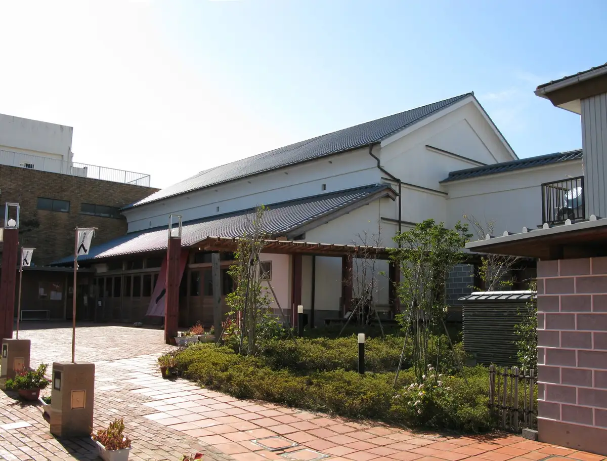
Stay
コテージ シーサイド手結 －Seaside Tei－
Cottage Shisaido Tayui -Seaside Tei
リゾートホテル海辺の果樹園
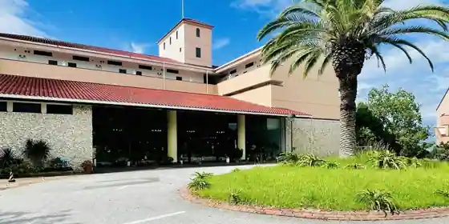
Resort Hotel Umibe No Kajuen
VILLA MOITOS YASU
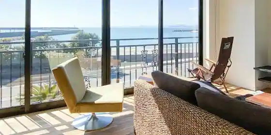
VILLA MOITOS YASU
Inn in Yasu, Konan with scenic views.
高知黒潮ホテル～天然温泉のスーパー銭湯「龍馬の湯」併設～
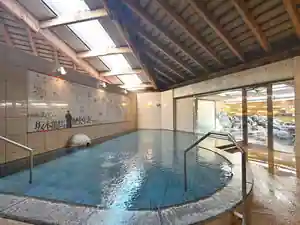
Kochi Kuroshio Hotel ~ Tennen Onsen No Supa Sento (Ryoma No Yu) Heisetsu ~
ゲストハウス水仙
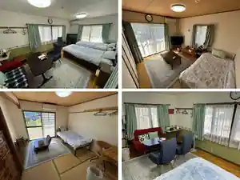
Guesthouse Suisen
オリーブ・ハウス
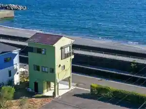
Oribu House
RESORT VILLA COTEAU
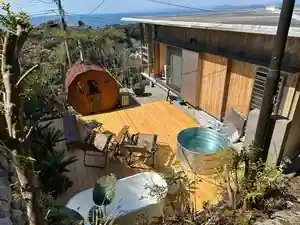
RESORT VILLA COTEAU
香南市サイクリングターミナル 海のやどしおや宿
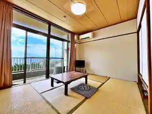
Konan Shi Saikuringutaminaru Umi Noyadoshioya Yado
Dining
廣末屋
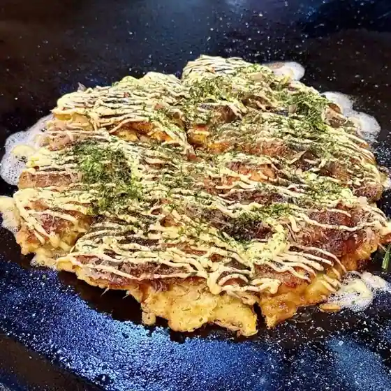
Hirosue Ya
居酒屋 多ヌ来
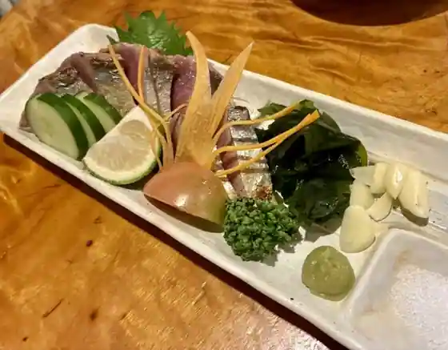
Izakaya Ta Nu Rai
あわびめし栄楽
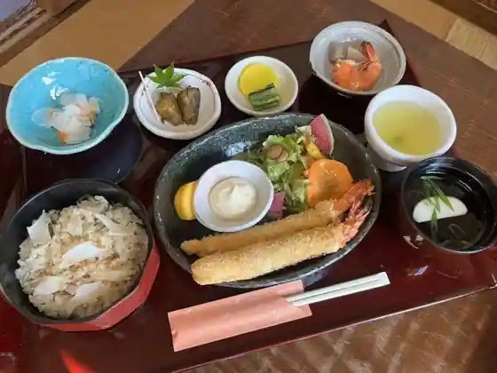
Awabimeshi Sakae Raku
とさを商店
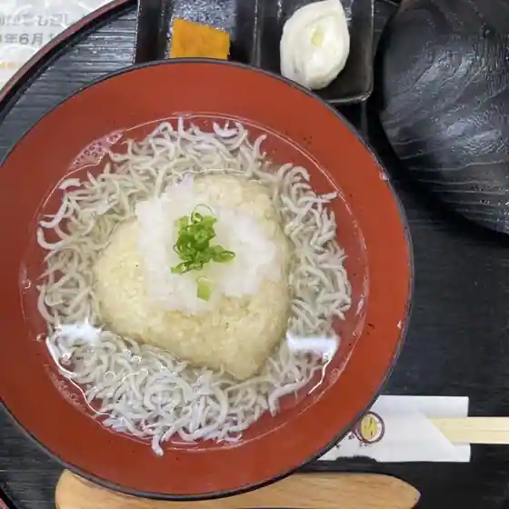
Tosawo Sho
土佐角弘海産
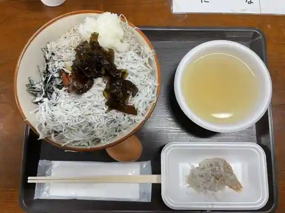
Tosa Kaku Hiromi San
うなぎ屋きた本
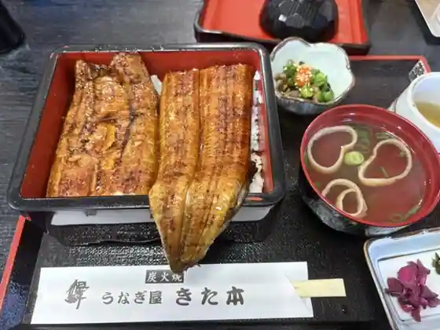
Unagi Ya Kita Hon
土佐カントリークラブ オーシャン
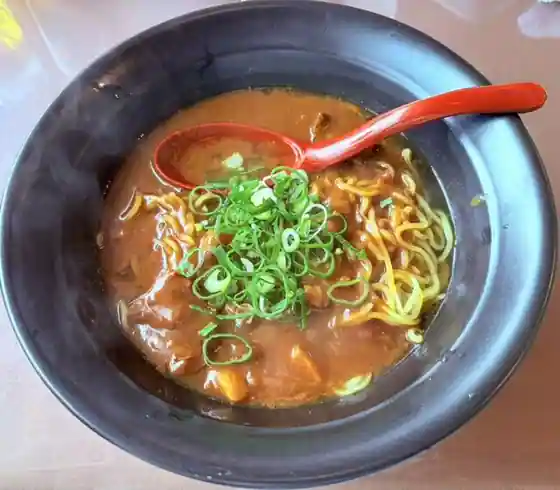
Tosa Kantorikurabu Oshan
ベジ フルッタ
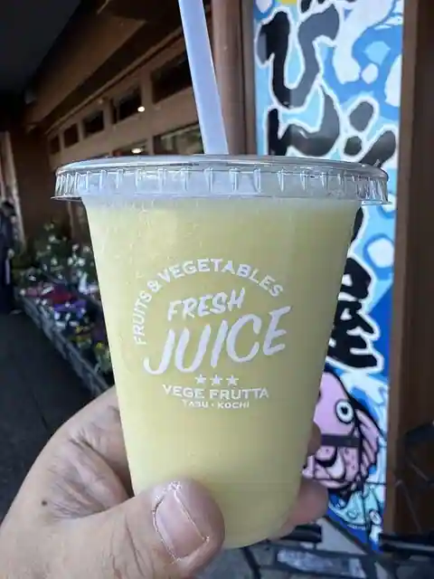
Beji Furutta
ドルチェかがみ
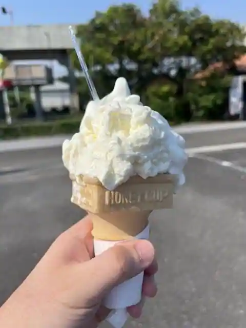
Doruche Kagami
うどんの庄 真田
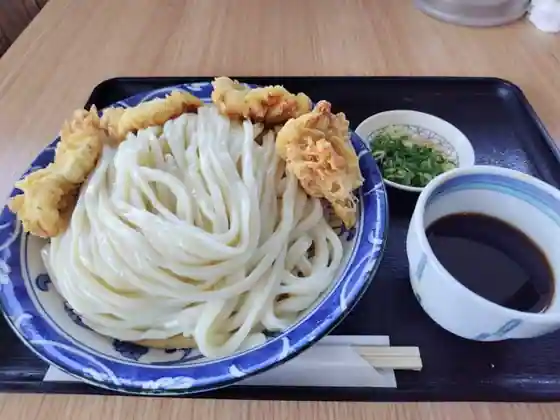
Udonno Sho Sanada
旅館かとり
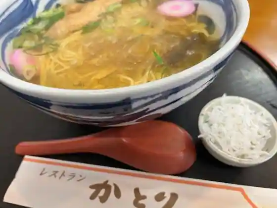
Ryokan Katori
来来
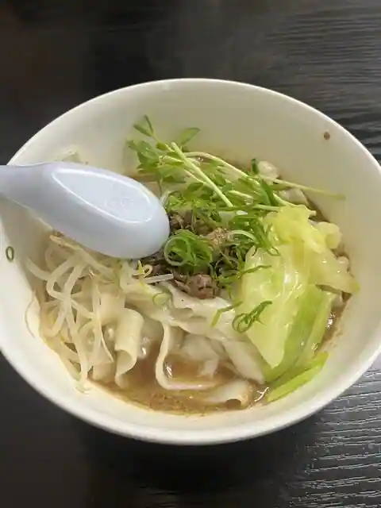
Rairai
漁師料理海女
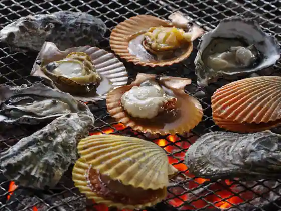
Ryoshi Ryori Ama
ジェラッテリアクリーム
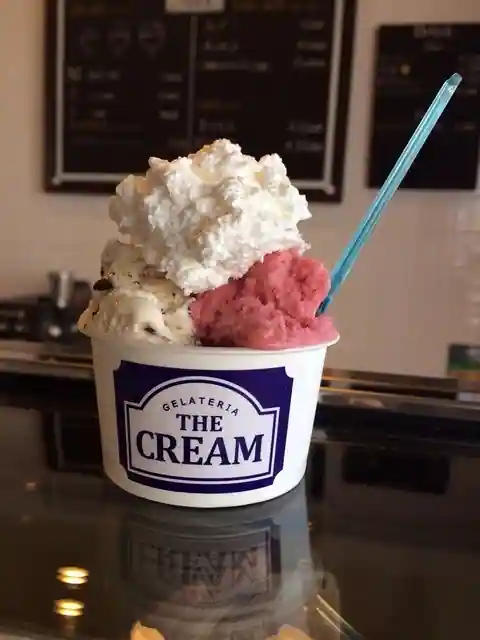
Jieratteriakurimu
澤餅茶屋
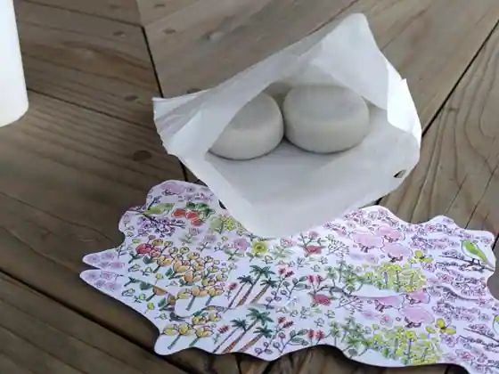
Sawa Mochi Chaya
海辺の果樹園
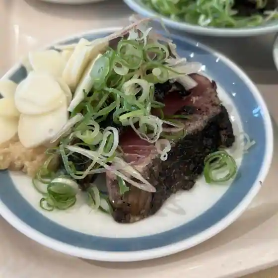
Umibe No Kajuen
マナマナ
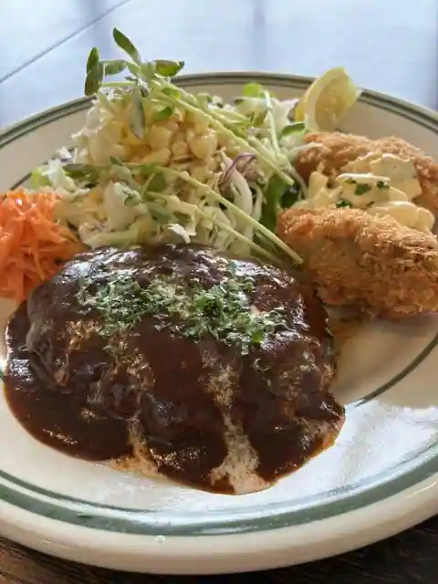
Manamana
北村のたれ
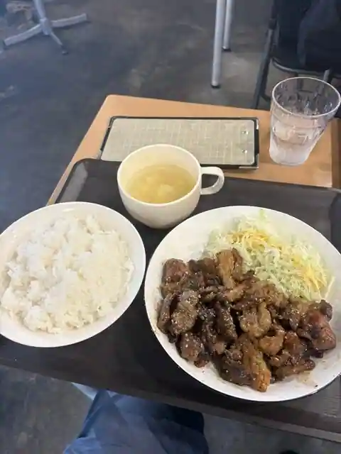
Kitamura Notare
マルトクラーメン 野市店
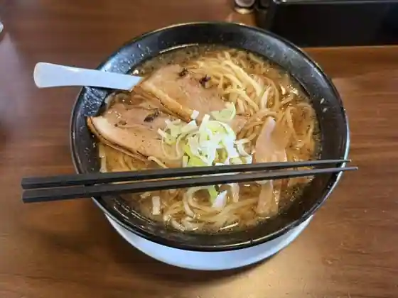
Marutoku Ramen Noichi
マサラ シーパーク店
Masara Shi Park
スイートバジル
Suitobajiru
田吾作うどん
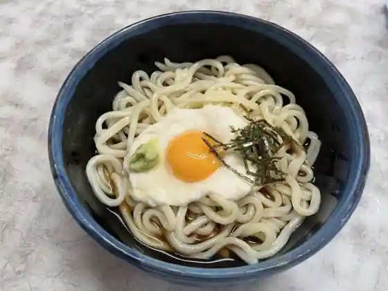
Tagosaku Udon
満天の星 野市店
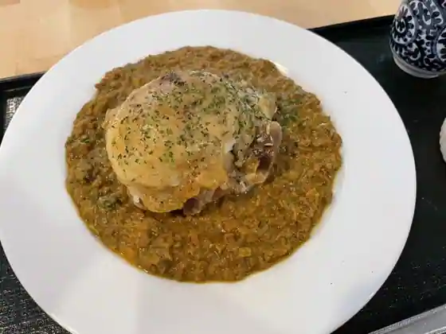
Manten No Hoshi Noichi
カフェ 香月
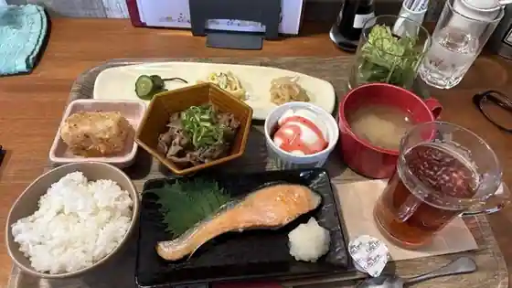
Cafe Kogetsu
Sights
E Kinzo
no Ichi Eki
Akaoka Eki
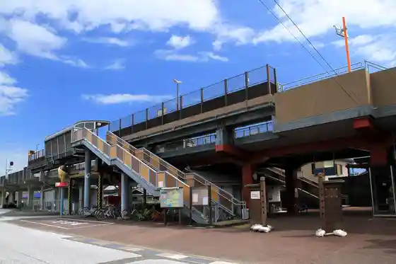
Tayui Minato Kado Hashi
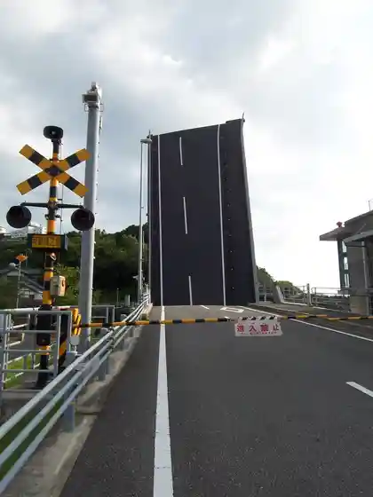
Kochi Prefectural no Ichi Dobutsu Park
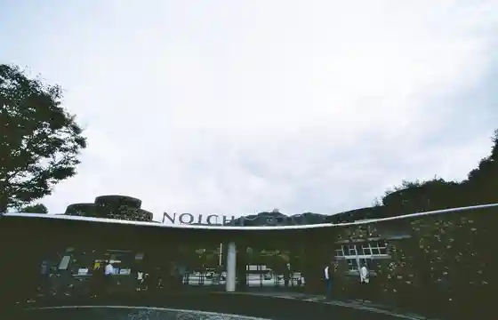
Yasu Eki